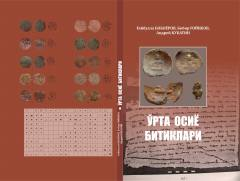

OOO'rta Osiyodan topilgan so'g'diy yozma yodgorliklarning ilmiy tahlili.
Ushbu kitob O'rta Osiyo hududlaridan topilgan so'g'diy yozma yodgorliklarni — muhrlar, tangalar, hujjatlar va boshqa epigrafik manbalarni ilmiy jihatdan tahlil qiladi. Asarda so'g'diy yozuvning tarqalish geografiyasi, turkiy unvonlar va islomgacha bo'lgan davr tangalari keng o'rganilgan. Kitob O'zbekiston Fanlar akademiyasi va bir qator universitetlar hamkorligida tayyorlangan.